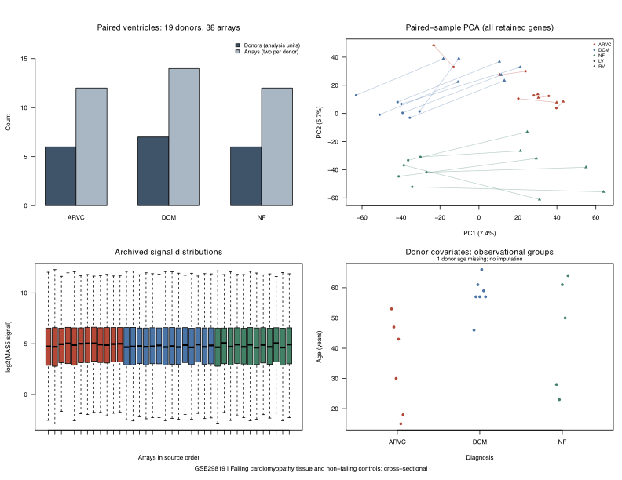
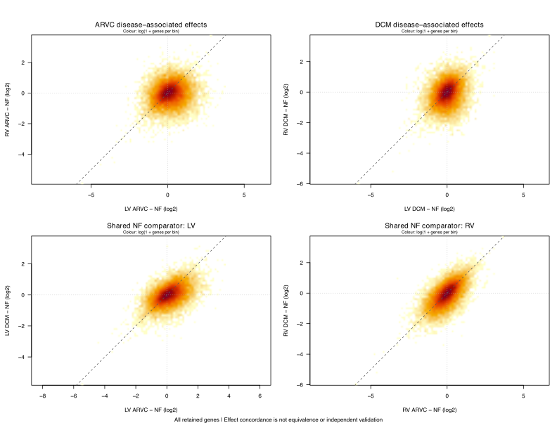
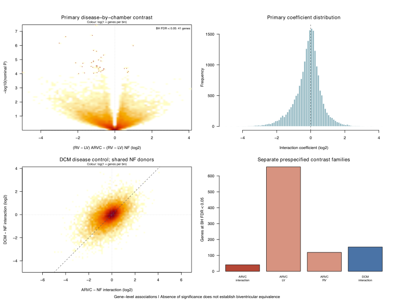
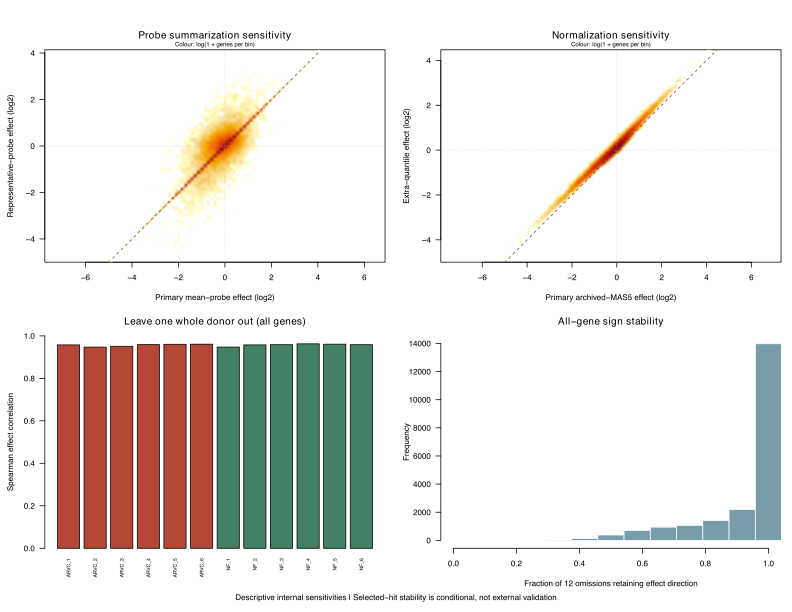

原始研究：Myocardial transcriptome analysis of human arrhythmogenic right ventricular cardiomyopathy · DOI。实现代码、处理与源文件校验值：GitHub 工作流。
运行与统计单位
19 位供者：ARVC 6、DCM 7、NF 6；每位供者配对 LV/RV。主分析使用每人的 log2(RV)−log2(LV)，在 ARVC 与 NF 之间比较。MAS5 线性信号显式 log2 转换，不加伪计数；仅使用无歧义基因注释，多个探针取平均 log2 表达。
limma 3.62.2，trend=TRUE、robust=FALSE。BH 校正在每项对比的全基因范围内分别计算，未对全部探索性对比联合校正；主交互作用检验单列，次要对比不升级为验证。阈值仅用于描述，不显著不能证明心室等价。
这次运行说明什么
主交互作用对比在 20848 个基因中有 41 个达到 BH FDR < 0.05；固定的敏感性模型中为 1–182 个。阈值计数受探针处理、方差趋势及供者集合影响，需同时查看效应量与稳定性。
组内左右室差异、疾病相关表达变化与疾病×心室交互作用是不同问题；不能用其中一个检验替代另一个。
全部固定对比
| contrast | model_role | n_genes | n_donors | n_ARVC | n_DCM | n_NF | FDR05 | nominalP05 | min_p | min_padj |
|---|---|---|---|---|---|---|---|---|---|---|
| interaction_ARVC_vs_NF | primary | 20848 | 12 | 6 | 0 | 6 | 41 | 2318 | 0.0000000340358233861457 | 0.000709578845954365 |
| LV_ARVC_vs_NF | secondary | 20848 | 12 | 6 | 0 | 6 | 657 | 3991 | 0.0000000230573383060959 | 0.000281506818105849 |
| RV_ARVC_vs_NF | secondary | 20848 | 12 | 6 | 0 | 6 | 119 | 2463 | 0.0000000186658388783104 | 0.000389145408935015 |
| LV_DCM_vs_NF | secondary | 20848 | 13 | 0 | 7 | 6 | 452 | 3270 | 0.00000000902313451174365 | 0.000188114308300832 |
| RV_DCM_vs_NF | secondary | 20848 | 13 | 0 | 7 | 6 | 836 | 3896 | 0.000000000975382538715184 | 0.0000203347751671342 |
| interaction_DCM_vs_NF | secondary | 20848 | 13 | 0 | 7 | 6 | 153 | 2528 | 0.0000000337933577233032 | 0.0005542401240681 |
| LV_ARVC_vs_DCM | secondary | 20848 | 13 | 6 | 7 | 0 | 143 | 3270 | 0.00000000225197861756978 | 0.0000469492502190947 |
| RV_ARVC_vs_DCM | secondary | 20848 | 13 | 6 | 7 | 0 | 102 | 2211 | 0.00000010845108312503 | 0.00226098818099062 |
| interaction_ARVC_vs_DCM | secondary | 20848 | 13 | 6 | 7 | 0 | 430 | 3225 | 0.0000000000407535586522375 | 0.000000849630190781847 |
| within_ARVC_RV_minus_LV | secondary | 20848 | 6 | 6 | 0 | 0 | 0 | 1228 | 0.0000132560634727449 | 0.276362411279787 |
| within_DCM_RV_minus_LV | secondary | 20848 | 7 | 0 | 7 | 0 | 1317 | 4597 | 0.0000000000710338211738286 | 0.00000116918391470296 |
| within_NF_RV_minus_LV | secondary | 20848 | 6 | 0 | 0 | 6 | 206 | 3515 | 0.0000000862293433578042 | 0.0010950631358473 |
| sensitivity_representative_probe | sensitivity | 20848 | 12 | 6 | 0 | 6 | 182 | 2766 | 0.0000000512829213011557 | 0.000750261824661561 |
| sensitivity_extra_quantile | sensitivity | 20848 | 12 | 6 | 0 | 6 | 36 | 2183 | 0.0000000262621055548563 | 0.000547512376607645 |
| sensitivity_no_trend | sensitivity | 20848 | 12 | 6 | 0 | 6 | 1 | 2123 | 0.000000668382586040295 | 0.0139344401537681 |
| sensitivity_complete_case_unadjusted | sensitivity | 20848 | 11 | 6 | 0 | 5 | 22 | 2184 | 0.0000000750944717560175 | 0.0011288024076214 |
| sensitivity_complete_case_age_sex | sensitivity | 20848 | 11 | 6 | 0 | 5 | 15 | 2153 | 0.000000128654816596186 | 0.0026821956163973 |
| LOO_without_ARVC_1 | leave_one_donor_out | 20848 | 11 | 5 | 0 | 6 | 7 | 2158 | 0.000000212142089857594 | 0.00442273828935112 |
| LOO_without_ARVC_2 | leave_one_donor_out | 20848 | 11 | 5 | 0 | 6 | 26 | 2228 | 0.000000148573516838411 | 0.00309746067904719 |
| LOO_without_ARVC_3 | leave_one_donor_out | 20848 | 11 | 5 | 0 | 6 | 20 | 2315 | 0.000000200016851756247 | 0.00416078203173613 |
| LOO_without_ARVC_4 | leave_one_donor_out | 20848 | 11 | 5 | 0 | 6 | 22 | 2306 | 0.000000088786645548605 | 0.0011557817439984 |
| LOO_without_ARVC_5 | leave_one_donor_out | 20848 | 11 | 5 | 0 | 6 | 31 | 2140 | 0.000000194211845748684 | 0.00312144997923185 |
| LOO_without_ARVC_6 | leave_one_donor_out | 20848 | 11 | 5 | 0 | 6 | 13 | 2222 | 0.0000000648408819935414 | 0.00135180270780135 |
| LOO_without_NF_1 | leave_one_donor_out | 20848 | 11 | 6 | 0 | 5 | 27 | 2173 | 0.0000000756092555128869 | 0.00157630175893267 |
| LOO_without_NF_2 | leave_one_donor_out | 20848 | 11 | 6 | 0 | 5 | 17 | 2276 | 0.00000016121656161119 | 0.00336104287647009 |
| LOO_without_NF_3 | leave_one_donor_out | 20848 | 11 | 6 | 0 | 5 | 24 | 2281 | 0.000000152143195840693 | 0.00174268453616199 |
| LOO_without_NF_4 | leave_one_donor_out | 20848 | 11 | 6 | 0 | 5 | 15 | 2238 | 0.000000165381016759228 | 0.00344786343739638 |
| LOO_without_NF_5 | leave_one_donor_out | 20848 | 11 | 6 | 0 | 5 | 22 | 2184 | 0.0000000750944717560175 | 0.0011288024076214 |
| LOO_without_NF_6 | leave_one_donor_out | 20848 | 11 | 6 | 0 | 5 | 33 | 2278 | 0.000000155029111784951 | 0.00323204692249266 |
方法选择敏感性
| model | n_genes | FDR05 | spearman_effect | same_direction_fraction |
|---|---|---|---|---|
| representative_probe | 20848 | 182 | 0.791949081866394 | 0.826650038372985 |
| extra_quantile | 20848 | 36 | 0.978506517142001 | 0.916922486569455 |
| no_trend | 20848 | 1 | 1 | 1 |
| complete_case_unadjusted | 20848 | 22 | 0.961031978193749 | 0.929009976976209 |
| complete_case_age_sex | 20848 | 15 | 0.910064761529699 | 0.885312739831159 |
方法一致性与留一供者分析反映本数据内的敏感性，不是独立人群验证。
结果图：可下载并由代码重新生成




临床研究下一步
本例能复核 B-S1 的心室组织表达一侧。下一项研究需要同患者、同区域、接近时间的组织分子测量与 CMR／电标测对应，再通过前瞻性随访检验其是否关联持续性室性心律失常等明确结局。不同供者的横断面组织不能排列成真实病程。
- End-stage transplant tissue cannot establish early disease chronology or a treatment window.
- Bulk tissue mixes cell types and cannot identify cellular spatial neighborhoods.
- Pairing controls within-donor chamber comparison, not between-group confounding.
- Age/sex distributions differ and NF_5 has missing covariates; complete-case adjustment is a sensitivity analysis.
- No independent cohort validation; method agreement or leave-one-donor-out stability is not external validation.
- A nonsignificant chamber or interaction test does not demonstrate equivalence.
复用与下载
运行与复现检查记录：25项检查通过；全部数值表独立重跑一致。参考环境使用匹配版本的既有R包，本机从零源码编译未验证。
python3 workflows/gse29819/run.py --install 下载校验输入、在本地缓存安装锁定版本、运行分析并生成本页。要求 Python 3.10+、R 4.4.3（参考环境）、Poppler 的 pdftocairo，以及安装缺失 R 包时所需的构建工具。默认输出到 docs/workflows/gse29819，原始数据留在忽略的缓存目录。
图和统计表由本项目代码生成；使用时同时引用原始研究、limma和本项目版本。第三方软件保留原许可；原始表达与完整临床协变量表未打包；派生 QC 和敏感性表保留公开的样本／供者及诊断、心室标签。